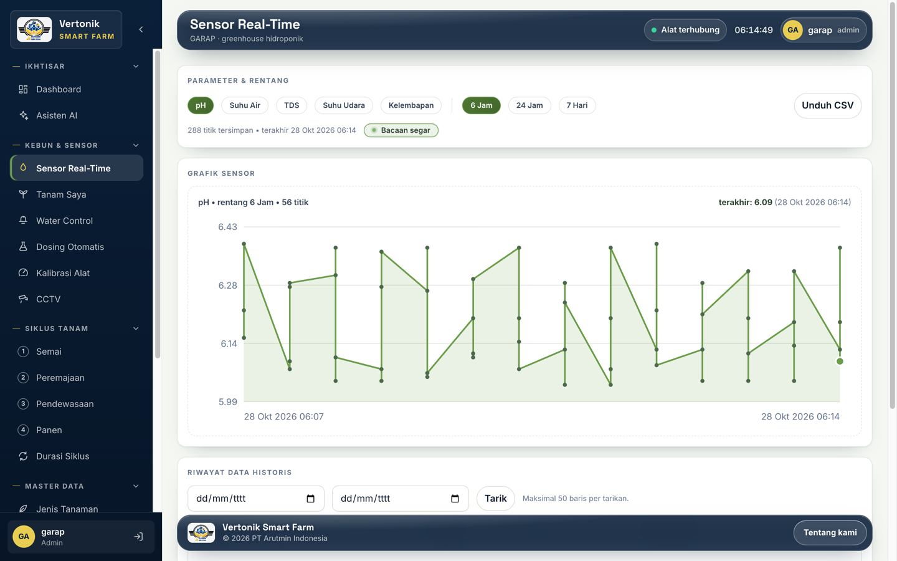

Sistem Monitoring Hidroponik
Lima besaran yang dipantau GARAP, perjalanan datanya, dan cara membaca statusnya.
Lima besaran utama + level tandon
pH air nutrisi
Satuan pH. Probe pH via ADS1115 kanal A0.
EC / TDS nutrisi
TDS dalam ppm, EC dalam mS/cm. Probe EC via ADS1115 kanal A1.
Suhu air tandon
Satuan °C. Probe tahan air DS18B20.
Suhu udara
Satuan °C. Sensor SHT31.
Kelembapan udara
Satuan % RH. Sensor SHT31 yang sama.
Level tandon
Pelampung bawah & atas: KURANG / CUKUP / PENUH.
Dari probe ke layar
Sensor
Probe di tandon & udara greenhouse.
ESP32
Membaca & mengirim tiap 5 detik. Bacaan gagal tidak diganti angka palsu.
MQTT
Topik garap/aktuator-01/data ke Raspberry Pi.
Backend + DB
Diperiksa kewajarannya, disimpan di PostgreSQL.
Dashboard
Kartu sensor, grafik, peringatan.
Tiga kondisi yang perlu dikenali
Di dalam batas aman
Angka berada di rentang Ambang Sensor. Tidak perlu tindakan.
Di luar ambang
Muncul di menu Peringatan (kuning waspada / merah kritis). Periksa tandon lalu lapor.
Data tidak baru
Alat offline → yang tampil bacaan terakhir. Backend menandai sensor basi bila > 120 detik tanpa data.
Angka di luar ini = probe bermasalah, bukan tanaman
Dipakai sistem untuk mendeteksi probe lepas atau kabel putus. Bukan target budidaya.
| Besaran | Rentang wajar | Jika di luar |
|---|---|---|
| pH | 3 – 9 | Dianggap bacaan mustahil; dosing ditahan. |
| TDS | 50 – 2.500 ppm | Dianggap bacaan mustahil; dosing ditahan. |
| Suhu air | 5 – 45 °C | Dianggap bacaan mustahil; dosing ditahan. |
Halaman Sensor

Batas aman tiap tanaman diatur admin
Nilai min–maks aman per parameter ada di menu Ambang Sensor. Infografis ini sengaja tidak mencantumkan angka target agar tidak menggantikan pengaturan di sistem.